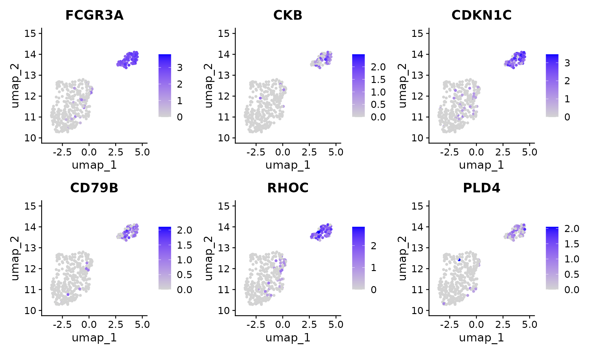

Perform ClusterDE on a PBMC dataset
Dongyuan Song
Bioinformatics IDP, University of California, Los Angelesdongyuansong@ucla.edu
31 July 2024
Source:vignettes/ClusterDE-PBMC.Rmd
ClusterDE-PBMC.Rmd
#tools::R_user_dir("ClusterDE", which="cache")
library(ClusterDE)
library(Seurat)
library(SingleCellExperiment)
library(ggplot2)
library(patchwork)
#library(SeuratData)
library(Matrix)Download data
The PBMC datasets are originally from SeuratData. We use
one of them (10x Chromium (v3) from PBMC1 replicate). We filtered out
some lowly epxressed genes to save computational time here.
Run the regular Seurat pipeline
We perform the default Seurat clustering. Note that in real data analysis, the cell type label is usually unknown.
RNGkind("L'Ecuyer-CMRG")
set.seed(123)
pbmc <- UpdateSeuratObject(pbmc) ## Avoid errors
#> Validating object structure
#> Updating object slots
#> Ensuring keys are in the proper structure
#> Warning: Assay RNA changing from Assay to Assay
#> Ensuring keys are in the proper structure
#> Ensuring feature names don't have underscores or pipes
#> Updating slots in RNA
#> Validating object structure for Assay 'RNA'
#> Object representation is consistent with the most current Seurat version
pbmc <- NormalizeData(pbmc)
pbmc <- FindVariableFeatures(object = pbmc)
pbmc <- ScaleData(object = pbmc)
#> Centering and scaling data matrix
pbmc <- RunPCA(object = pbmc)
#> PC_ 1
#> Positive: IL32, CCL5, TRBC2, TRAC, CD69, CST7, RORA, CTSW, SPOCK2, ITM2A
#> GZMM, CD247, TRBC1, C12orf75, IL7R, CD8A, CD2, LDHB, GZMA, CD7
#> NKG7, CD6, GZMH, CD8B, BCL11B, PRF1, LYAR, LTB, FGFBP2, TCF7
#> Negative: LYZ, FCN1, CLEC7A, CPVL, SERPINA1, SPI1, S100A9, AIF1, NAMPT, CSTA
#> CTSS, MAFB, MPEG1, NCF2, VCAN, FGL2, S100A8, TYMP, CST3, LST1
#> CYBB, CFD, FCER1G, SLC11A1, TGFBI, GRN, CD14, PSAP, SLC7A7, MS4A6A
#> PC_ 2
#> Positive: RPL10, EEF1A1, TMSB10, RPS2, RPS12, RPL13, RPS18, RPS23, RPLP1, TPT1
#> RPS8, IL32, S100A4, PFN1, RPLP0, NKG7, ARL4C, HSPA8, CST7, ZFP36L2
#> ANXA1, CTSW, S100A6, LDHA, CORO1A, CD247, GZMA, CALR, S100A10, GZMM
#> Negative: NRGN, PF4, SDPR, HIST1H2AC, MAP3K7CL, PPBP, GNG11, GPX1, TUBB1, SPARC
#> CLU, PGRMC1, FTH1, RGS18, MARCH2, TREML1, HIST1H3H, AP003068.23, NCOA4, ACRBP
#> TAGLN2, PRKAR2B, CD9, CA2, CMTM5, CTTN, MTURN, TMSB4X, HIST1H2BJ, TSC22D1
#> PC_ 3
#> Positive: CD79A, HLA-DQA1, MS4A1, LINC00926, IGHM, BANK1, IGHD, TNFRSF13C, HLA-DQB1, CD74
#> IGKC, HLA-DRA, BLK, CD83, CD37, CD22, ADAM28, JUND, NFKBID, HLA-DRB1
#> P2RX5, CD79B, VPREB3, IGLC2, FCER2, RPS8, LTB, RPS23, TCOF1, GNG7
#> Negative: CCL5, TMSB4X, SRGN, NKG7, ACTB, CST7, GZMH, FGFBP2, CTSW, PRF1
#> GZMA, GZMB, C12orf75, S100A4, ANXA1, KLRD1, NRGN, GNLY, GZMM, IL32
#> PF4, SDPR, PPBP, MYO1F, CD247, GAPDH, MAP3K7CL, HIST1H2AC, GNG11, TUBB1
#> PC_ 4
#> Positive: FCGR3A, GZMB, FGFBP2, GZMH, NKG7, HLA-DPA1, PRF1, HLA-DPB1, CST7, GNLY
#> KLRD1, HLA-DRB1, GZMA, CCL5, SPON2, ADGRG1, CTSW, ZEB2, PRSS23, IFITM2
#> CCL4, CD74, KLRF1, RHOC, MTSS1, CDKN1C, CD79B, CEP78, HLA-DQA1, CLIC3
#> Negative: IL7R, LEPROTL1, LTB, RCAN3, MAL, LEF1, TCF7, ZFP36L2, CAMK4, VIM
#> LDHB, NOSIP, JUNB, SLC2A3, TRABD2A, RGCC, SATB1, TNFAIP3, TMEM123, SOCS3
#> AQP3, BCL11B, NELL2, TNFRSF25, CD28, PABPC1, DNAJB1, TRAT1, OXNAD1, TRAC
#> PC_ 5
#> Positive: CDKN1C, HES4, CSF1R, CKB, ZNF703, TCF7L2, CTSL, MS4A7, PAG1, FAM110A
#> SIGLEC10, LRRC25, FCGR3A, LTB, RNASET2, CDH23, IL7R, RRAS, LINC01272, IFITM3
#> LST1, LILRB2, PILRA, RHOC, SLC2A6, PECAM1, CAMK1, TAGLN, IFI30, BID
#> Negative: VCAN, S100A12, S100A8, CD14, CSF3R, ITGAM, CST7, GZMB, MT-CO1, GNLY
#> KLRD1, PRF1, MS4A6A, GZMH, FGFBP2, CD93, EGR1, NKG7, S100A9, MT-CO3
#> IER3, THBS1, RNASE6, CLEC4E, MGST1, CTSW, SGK1, GZMA, RP11-1143G9.4, CH17-373J23.1
pbmc <- FindNeighbors(object = pbmc)
#> Computing nearest neighbor graph
#> Computing SNN
pbmc <- FindClusters(object = pbmc, resolution = 0.3)
#> Modularity Optimizer version 1.3.0 by Ludo Waltman and Nees Jan van Eck
#>
#> Number of nodes: 3222
#> Number of edges: 108605
#>
#> Running Louvain algorithm...
#> Maximum modularity in 10 random starts: 0.9363
#> Number of communities: 10
#> Elapsed time: 0 seconds
pbmc <- RunUMAP(object = pbmc, dims = 1:10)
#> Warning: The default method for RunUMAP has changed from calling Python UMAP via reticulate to the R-native UWOT using the cosine metric
#> To use Python UMAP via reticulate, set umap.method to 'umap-learn' and metric to 'correlation'
#> This message will be shown once per session
#> 00:44:42 UMAP embedding parameters a = 0.9922 b = 1.112
#> 00:44:42 Read 3222 rows and found 10 numeric columns
#> 00:44:42 Using Annoy for neighbor search, n_neighbors = 30
#> 00:44:42 Building Annoy index with metric = cosine, n_trees = 50
#> 0% 10 20 30 40 50 60 70 80 90 100%
#> [----|----|----|----|----|----|----|----|----|----|
#> **************************************************|
#> 00:44:42 Writing NN index file to temp file /tmp/RtmprOTKJf/file83daa2b7baa
#> 00:44:42 Searching Annoy index using 1 thread, search_k = 3000
#> 00:44:43 Annoy recall = 100%
#> 00:44:44 Commencing smooth kNN distance calibration using 1 thread with target n_neighbors = 30
#> 00:44:45 Initializing from normalized Laplacian + noise (using RSpectra)
#> 00:44:45 Commencing optimization for 500 epochs, with 126446 positive edges
#> 00:44:48 Optimization finished
p1 <- DimPlot(object = pbmc, reduction = "umap", label = TRUE) + ggtitle("Clustering result") + NoLegend()
p2 <- DimPlot(object = pbmc, reduction = "umap", group.by = "CellType", label = TRUE) + NoLegend()
p1 + p2
In this vignette, we are interested in cluster 2 vs 8, which
approximately represent CD14+/CD16+ monocytes. Please note that
ClusterDE is designed for 1 vs 1 comparison. Therefore, users may (1)
choose the two interested clusters manually based on their knowledge or
(2) use the two locally closest clusters from computation (e.g.,
BuildClusterTree in Seurat).
pbmc <- BuildClusterTree(pbmc)
PlotClusterTree(pbmc)
We perform the DE test between cluster 2 and 8. We subset the cluster
2 and 8 (pbmc_sub).
pbmc_sub <- subset(x = pbmc, idents = c(2, 8))
original_markers <- FindMarkers(pbmc_sub,
ident.1 = 2,
ident.2 = 8,
min.pct = 0,
logfc.threshold = 0)
#> For a (much!) faster implementation of the Wilcoxon Rank Sum Test,
#> (default method for FindMarkers) please install the presto package
#> --------------------------------------------
#> install.packages('devtools')
#> devtools::install_github('immunogenomics/presto')
#> --------------------------------------------
#> After installation of presto, Seurat will automatically use the more
#> efficient implementation (no further action necessary).
#> This message will be shown once per sessionNote: since we need the same number of genes being tested in real data and null data, we manually remove the default filtering in Seurat, which will exclude some genes from being test. We believe that this fitering should be performed after you test every gene.
Generate synthetic null data
We first generate the synthetic null data based on the target data
(real subset data, pbmc_sub, which contains the two
clusters you are interested in). You can increase the number of cores
(CPUs) to speed it up.
count_mat <- GetAssayData(object = pbmc_sub, slot = "counts")
#> Warning: The `slot` argument of `GetAssayData()` is deprecated as of SeuratObject 5.0.0.
#> ℹ Please use the `layer` argument instead.
#> This warning is displayed once every 8 hours.
#> Call `lifecycle::last_lifecycle_warnings()` to see where this warning was
#> generated.
set.seed(1234)
system.time(synthetic_null <- ClusterDE::constructNull(count_mat, nCores = 2, fastVersion = TRUE))
#> 130 genes have no more than 2 non-zero values; ignore fitting and return all 0s.
#> 64.5% of genes are used in correlation modelling.
#> user system elapsed
#> 84.205 55.444 39.975We perform the same pipeline as we did for target data. Please note we need two clusters here, too. This is straightforward for clustering method with predefined cluster numbers, e.g., K-means. For louvain clustering used in Seurat you may manually adjust the resolution parameter so that we still get two clusters.
pbmc_null <- CreateSeuratObject(counts = synthetic_null)
set.seed(123)
pbmc_null <- NormalizeData(object = pbmc_null)
#> Normalizing layer: counts
pbmc_null <- FindVariableFeatures(object = pbmc_null)
#> Finding variable features for layer counts
pbmc_null <- ScaleData(object = pbmc_null)
#> Centering and scaling data matrix
pbmc_null <- RunPCA(object = pbmc_null)
#> PC_ 1
#> Positive: RPS19, PFN1, AIF1, RPS27, LST1, RPL8, YBX1, COTL1, RPL41, RNASET2
#> FTL, IFITM3, FCGR3A, RPL10, IFITM2, FTH1, NACA, FCER1G, TMSB4X, SOD1
#> RPS29, B2M, GNAI2, HLA-B, RHOC, HLA-C, TMSB10, FAU, RPL19, MS4A7
#> Negative: VCAN, FOS, S100A8, LYZ, S100A9, SLC2A3, CD14, CSF3R, S100A12, IRF2BP2
#> GPX1, MS4A6A, ITGAM, FOSB, DUSP6, CD36, CYP1B1, PPIF, SELL, RP11-1143G9.4
#> ZFP36L1, NFKBIA, RGS2, CD93, SGK1, RNASE6, CD99, STAB1, NCF1, CEBPD
#> PC_ 2
#> Positive: CDKN1C, MALAT1, FAM110A, SLC2A6, FCGR3A, MTSS1, RRAS, TCF7L2, KLF2, PECAM1
#> PAG1, LYST, RHOC, SOD1, ABI3, CYFIP2, CKB, SPN, TPTEP1, ADA
#> HES4, CDH23, LTB, SLC44A2, PHTF2, PIK3CG, CAT, ITGAX, SNX9, CD79B
#> Negative: TPT1, RPS13, GAPDH, RPS3A, RPS18, RPLP0, HLA-DRA, RPL18A, EEF1A1, RPS2
#> GPX1, HLA-DRB1, RPL37A, CPVL, RPS8, RPL28, RPS6, CD74, RPL23A, RPL3
#> RPS14, RPS4X, RPL26, RPL11, RPS12, FCN1, RPL37, RPL30, LYZ, RPL10
#> PC_ 3
#> Positive: HLA-DRA, MARCKSL1, HLA-DPB1, HLA-DPA1, APOBEC3A, HLA-DRB1, EMP3, CD74, MARCKS, CPVL
#> CD300E, DUSP6, HLA-DMB, DOK2, CST3, HLA-DQB1, NAAA, CEBPB, RUNX3, SRC
#> RGCC, MAFB, TIMP1, MAP3K8, TLE3, CDKN1A, UTRN, ZMIZ1, HMOX1, IFI30
#> Negative: HMGB2, FYN, RPS3, IRS2, S100A8, ZFP36L2, RPS15A, S100A9, ADD3, ALOX5AP
#> S100A12, SELL, UBE2D1, FAM65B, RGS2, RPS4X, PYGL, SORL1, PLBD1, CREBRF
#> SAMSN1, RPL30, YPEL3, RPS6, RPL3, SOD2, RNF144B, EMB, RPS12, CNOT6L
#> PC_ 4
#> Positive: MALAT1, ARL4C, KCNAB2, LUC7L3, NKG7, SFT2D2, LINC00657, C5orf56, FAM133B, ZNF292
#> SORL1, LPP, PRRC2B, ZNF652, KLF9, BTG1, TMC6, YTHDC1, DDX6, RPS6KA3
#> DDHD1, SIGIRR, TTC14, GADD45B, PHKB, KDM7A, HBEGF, DENND1B, LBR, TOB1
#> Negative: S100A4, FTL, S100A11, CXCL8, FTH1, SERPINA1, S100A8, NCF1, ACTG1, DUSP6
#> FAM26F, ACTB, RGS2, FAU, FOS, COTL1, S100A9, S100A6, DIS3L2, SNAP23
#> SAT1, BCL2A1, CFD, CTB-61M7.2, PRELID1, S100A12, PLAUR, TRAC, AIF1, RHOB
#> PC_ 5
#> Positive: TUBA1A, TNFAIP3, ZCCHC8, LINC00657, APOBEC3A, DDX6, CIRBP, PLAUR, VASP, SNRK
#> KMT2A, S1PR3, INSIG1, BHLHE40, EHD1, B2M, LILRA1, ARHGAP15, RUNX3, PDE4B
#> EML4, DSTN, KIAA0430, FAM107B, PTGS2, WDFY1, PSMD1, TMX4, RPL30, CTNNB1
#> Negative: FAM102B, CEP63, ANXA1, CACUL1, TIMP1, UTP14A, TYW5, KAT8, SNHG9, C6orf226
#> OAS1, JUN, IRF8, AATF, TMEM55B, NAGK, YIPF4, TAGLN2, YDJC, SERTAD3
#> ADAM28, POMT1, LRP10, LMNA, SNX10, LPAR6, RAB37, HSPBP1, LPP, TSPAN17
pbmc_null <- FindNeighbors(object = pbmc_null)
#> Computing nearest neighbor graph
#> Computing SNN
pbmc_null <- FindClusters(object = pbmc_null, resolution = 0.3)
#> Modularity Optimizer version 1.3.0 by Ludo Waltman and Nees Jan van Eck
#>
#> Number of nodes: 453
#> Number of edges: 18383
#>
#> Running Louvain algorithm...
#> Maximum modularity in 10 random starts: 0.7450
#> Number of communities: 2
#> Elapsed time: 0 seconds
pbmc_null <- RunUMAP(object = pbmc_null, dims = 1:10)
#> 00:45:55 UMAP embedding parameters a = 0.9922 b = 1.112
#> 00:45:55 Read 453 rows and found 10 numeric columns
#> 00:45:55 Using Annoy for neighbor search, n_neighbors = 30
#> 00:45:55 Building Annoy index with metric = cosine, n_trees = 50
#> 0% 10 20 30 40 50 60 70 80 90 100%
#> [----|----|----|----|----|----|----|----|----|----|
#> **************************************************|
#> 00:45:55 Writing NN index file to temp file /tmp/RtmprOTKJf/file83da7088961
#> 00:45:55 Searching Annoy index using 1 thread, search_k = 3000
#> 00:45:55 Annoy recall = 100%
#> 00:45:56 Commencing smooth kNN distance calibration using 1 thread with target n_neighbors = 30
#> 00:45:57 Initializing from normalized Laplacian + noise (using RSpectra)
#> 00:45:57 Commencing optimization for 500 epochs, with 17726 positive edges
#> 00:45:58 Optimization finished
DimPlot(object = pbmc_null, reduction = "umap")
We perform the DE test on synthetic null data.
null_markers <- FindMarkers(pbmc_null,
ident.1 = 0,
ident.2 = 1,
min.pct = 0,
logfc.threshold = 0)We extract the p-values from both original data and synthetic null
data, then use ClusterDE to “compare” them.
original_pval <- original_markers$p_val
names(original_pval) <- rownames(original_markers)
null_pval <- null_markers$p_val
names(null_pval) <- rownames(null_markers)
res <- ClusterDE::callDE(original_pval, null_pval, nlogTrans = TRUE, FDR = 0.05)You can check the summary table. The genes are ranked by “contrast score (cs)”.
head(res$summaryTable)
#> # A tibble: 6 × 5
#> Gene target null cs q
#> <chr> <dbl> <dbl> <dbl> <dbl>
#> 1 FCGR3A 79.0 45.1 33.9 0.0123
#> 2 CKB 44.6 13.1 31.5 0.0123
#> 3 CDKN1C 67.5 37.2 30.3 0.0123
#> 4 CD79B 53.1 25.5 27.7 0.0123
#> 5 RHOC 65.8 39.5 26.2 0.0123
#> 6 PLD4 36.2 13.6 22.6 0.0123To compare the result from the naive Seurat pipeline and ClusterDE, we first visualize the top 6 DE genes from Seurat. Genes LST1 and RPS19 are both highly expressed in two clusters. In addition, RPS19 is reported as a stable housekeeping genes in several studies. Note that it does not mean the expression levels of LST1 and RPS19 are the same between the two cell types. It means that they are not good cell type markers. Philosophically speaking, it means that conditional on the two clusters are obtained by clustering algorithm, LST1 and RPS19 are less likely to be the cell type markers between the two cell types.
FeaturePlot(pbmc[ , pbmc$seurat_clusters %in% c(2, 8)], features = c(rownames(original_markers)[1:6]), ncol = 3) In contrast, the genes from ClusterDE do not have LST1 and
RPS19 anymore.
In contrast, the genes from ClusterDE do not have LST1 and
RPS19 anymore.
FeaturePlot(pbmc[, pbmc$seurat_clusters %in% c(2, 8)], features = c(res$summaryTable$Gene[1:6]), ncol = 3)
Session information
sessionInfo()
#> R version 4.4.1 (2024-06-14)
#> Platform: x86_64-pc-linux-gnu
#> Running under: Ubuntu 22.04.4 LTS
#>
#> Matrix products: default
#> BLAS: /usr/lib/x86_64-linux-gnu/openblas-pthread/libblas.so.3
#> LAPACK: /usr/lib/x86_64-linux-gnu/openblas-pthread/libopenblasp-r0.3.20.so; LAPACK version 3.10.0
#>
#> Random number generation:
#> RNG: L'Ecuyer-CMRG
#> Normal: Inversion
#> Sample: Rejection
#>
#> locale:
#> [1] LC_CTYPE=C.UTF-8 LC_NUMERIC=C LC_TIME=C.UTF-8
#> [4] LC_COLLATE=C.UTF-8 LC_MONETARY=C.UTF-8 LC_MESSAGES=C.UTF-8
#> [7] LC_PAPER=C.UTF-8 LC_NAME=C LC_ADDRESS=C
#> [10] LC_TELEPHONE=C LC_MEASUREMENT=C.UTF-8 LC_IDENTIFICATION=C
#>
#> time zone: UTC
#> tzcode source: system (glibc)
#>
#> attached base packages:
#> [1] stats4 stats graphics grDevices utils datasets methods
#> [8] base
#>
#> other attached packages:
#> [1] Matrix_1.7-0 patchwork_1.2.0
#> [3] ggplot2_3.5.1 SingleCellExperiment_1.26.0
#> [5] SummarizedExperiment_1.34.0 Biobase_2.64.0
#> [7] GenomicRanges_1.56.1 GenomeInfoDb_1.40.1
#> [9] IRanges_2.38.1 S4Vectors_0.42.1
#> [11] BiocGenerics_0.50.0 MatrixGenerics_1.16.0
#> [13] matrixStats_1.3.0 Seurat_5.1.0
#> [15] SeuratObject_5.0.2 sp_2.1-4
#> [17] ClusterDE_0.99.3 BiocStyle_2.32.1
#>
#> loaded via a namespace (and not attached):
#> [1] RcppAnnoy_0.0.22 splines_4.4.1 later_1.3.2
#> [4] tibble_3.2.1 polyclip_1.10-7 fastDummies_1.7.3
#> [7] lifecycle_1.0.4 globals_0.16.3 lattice_0.22-6
#> [10] MASS_7.3-60.2 magrittr_2.0.3 limma_3.60.4
#> [13] plotly_4.10.4 sass_0.4.9 rmarkdown_2.27
#> [16] jquerylib_0.1.4 yaml_2.3.10 httpuv_1.6.15
#> [19] sctransform_0.4.1 spam_2.10-0 spatstat.sparse_3.1-0
#> [22] reticulate_1.38.0 cowplot_1.1.3 pbapply_1.7-2
#> [25] RColorBrewer_1.1-3 abind_1.4-5 zlibbioc_1.50.0
#> [28] Rtsne_0.17 purrr_1.0.2 kde1d_1.0.7
#> [31] GenomeInfoDbData_1.2.12 ggrepel_0.9.5 irlba_2.3.5.1
#> [34] listenv_0.9.1 spatstat.utils_3.0-5 goftest_1.2-3
#> [37] RSpectra_0.16-2 spatstat.random_3.3-1 fitdistrplus_1.2-1
#> [40] parallelly_1.38.0 pkgdown_2.1.0 leiden_0.4.3.1
#> [43] codetools_0.2-20 DelayedArray_0.30.1 tidyselect_1.2.1
#> [46] UCSC.utils_1.0.0 farver_2.1.2 randtoolbox_2.0.4
#> [49] spatstat.explore_3.3-1 jsonlite_1.8.8 progressr_0.14.0
#> [52] ggridges_0.5.6 survival_3.6-4 systemfonts_1.1.0
#> [55] tools_4.4.1 ragg_1.3.2 ica_1.0-3
#> [58] Rcpp_1.0.13 glue_1.7.0 gridExtra_2.3
#> [61] SparseArray_1.4.8 xfun_0.46 mvnfast_0.2.8
#> [64] dplyr_1.1.4 withr_3.0.0 BiocManager_1.30.23
#> [67] fastmap_1.2.0 fansi_1.0.6 digest_0.6.36
#> [70] R6_2.5.1 mime_0.12 textshaping_0.4.0
#> [73] colorspace_2.1-1 scattermore_1.2 tensor_1.5
#> [76] spatstat.data_3.1-2 utf8_1.2.4 tidyr_1.3.1
#> [79] generics_0.1.3 data.table_1.15.4 httr_1.4.7
#> [82] htmlwidgets_1.6.4 S4Arrays_1.4.1 rngWELL_0.10-9
#> [85] uwot_0.2.2 pkgconfig_2.0.3 gtable_0.3.5
#> [88] lmtest_0.9-40 XVector_0.44.0 htmltools_0.5.8.1
#> [91] dotCall64_1.1-1 bookdown_0.40 scales_1.3.0
#> [94] png_0.1-8 spatstat.univar_3.0-0 knitr_1.48
#> [97] reshape2_1.4.4 nlme_3.1-164 cachem_1.1.0
#> [100] zoo_1.8-12 stringr_1.5.1 KernSmooth_2.23-24
#> [103] parallel_4.4.1 miniUI_0.1.1.1 desc_1.4.3
#> [106] pillar_1.9.0 grid_4.4.1 vctrs_0.6.5
#> [109] RANN_2.6.1 promises_1.3.0 xtable_1.8-4
#> [112] cluster_2.1.6 evaluate_0.24.0 cli_3.6.3
#> [115] compiler_4.4.1 rlang_1.1.4 crayon_1.5.3
#> [118] future.apply_1.11.2 labeling_0.4.3 plyr_1.8.9
#> [121] fs_1.6.4 stringi_1.8.4 viridisLite_0.4.2
#> [124] deldir_2.0-4 assertthat_0.2.1 rvinecopulib_0.6.3.1.1
#> [127] munsell_0.5.1 lazyeval_0.2.2 coop_0.6-3
#> [130] spatstat.geom_3.3-2 RcppHNSW_0.6.0 future_1.34.0
#> [133] statmod_1.5.0 shiny_1.9.0 highr_0.11
#> [136] ROCR_1.0-11 igraph_2.0.3 bslib_0.8.0
#> [139] ape_5.8